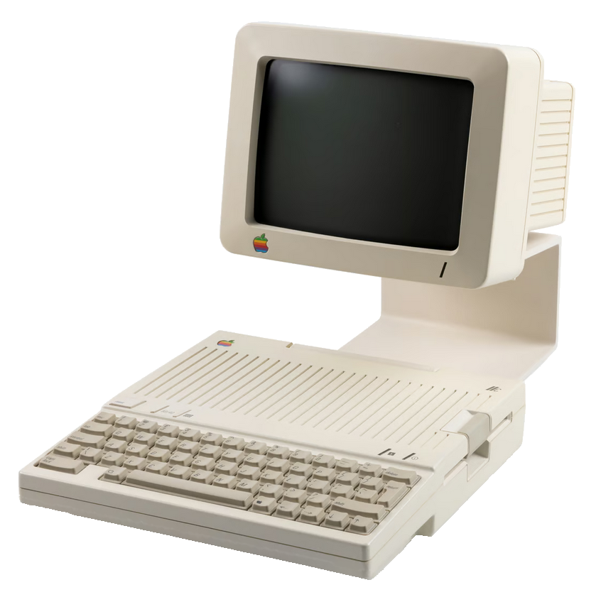

Apple II Computer and Apple II Monitor
The Apple II was the second personal computer circuit design to come from Steve Wozniak (one of Apple's founders). Wozniak again produced an elegant and efficient circuit design with a colour video output (the first mass-market personal computer to do so). Although the Apple II launched without any compelling applications it was a design that, as Steve Job's had hoped, would appeal to software writers and developers. The availability of Visicalc for the Apple II within months of its release helped propel sales of the Apple II ten fold year on year through the late 1970s.
The Apple II provided a steady and growing stream of revenue throughout the late 1970s to the end of the 1980s. This revenue was particularly important to sustaining Apple's existence through protracted periods of research and development and product failures - in particular the Apple III and Lisa. Macintosh sales displaced the pre eminence of the Apple II in the late 1980s.
The Apple Monitor II was late to arrive on the scene (1982) however the longevity of the Apple II resulted in its continued manufacture through the late 1980s. Prior to its release most Apple II users fed the video output from the computer to whatever screen was available (Television set, generic monitor). The Monitor II enjoyed brisk sales as Apple II users embraced it as complementary to the Apple II case.
Summary
| Object Statement | Computer, and monitor, Apple II and Apple II Monitor, plastic / glass / metal / electronic components, circuit design by Steve Wozniak and product design by Jerry Manock for Apple, Cupertino, California, United States of America, made in Ireland and by Samsung, Korea for Apple Computer Inc, 1977-1982 |
|---|---|
| Physical Description |
The Apple II with Apple II Monitor is a small desk top personal computer system housed in beige coloured plastic cases with chamfer corners. The Apple II houses the main circuit board, (missing power supply) and qwerty keyboard and is missing its lid. The Apple II also has two expansion cards fitted - a DISK interface card and a Pal encoder card. The Monitor II CRT has a green phosphor monochrome tube and an ON/OFF switch at the top right corner and a tuning switch on the centre front side. |
Dimensions
| Height | 280 mm |
|---|---|
| Width | 370 mm |
| Depth | 310 mm |
| Weight | 7kg |
Production Notes
| Notes |
The Apple II was the second computer to come from Apple Computer Incorporated. The Apple II went into production in April 1977. The Apple Monitor II was designed and released in 1982 nearly five years after the Apple II. It was purposely built to complement the Apple II. The Apple II was made in Ireland. The Apple II Monitor was made by Samsung, Korea for Apple Computer Inc. The elegant circuit which improved upon the Apple I was designed by Steven Wozniak and Steve Jobs had the task of managing the design of the computers housing. After doing the rounds of design consultancies in the (Silicon) Valley Jobs was recommended Jerry Manock who had only recently gone freelance. After graduating from the Stanford Product Design Program Manock went to work for Hewlett Packard (HP) where he was involved in the design of esoteric instruments for the microwave division . He left HP in 1972 and had produced a electronic aids for the handicapped with Telesensory Systems before answering Job's call for an industrial designer after being out on his own for just on a month. Job's was adamant that the Apple II case should be made of plastic. He saw plastic symbolically as presenting the Apple II as a mass market object (as opposed to the other products that it would compete with at the next Computer Faire) bare circuit boards or rudimentary steel or wooden boxes. |
|---|
History
| Notes |
The particular history of this Apple material is unknown - other than it would have been used by Museum staff in the 1980s. |
|---|
Source
| Credit Line | Ex Museum |
|---|---|
| Acquisition Date | 20 November 2012 |
 |
Copyright for the above image is held by the Powerhouse and may be subject to third-party copyright restrictions. Please submit an Image Licensing Enquiry for information regarding reproduction, copyright and fees. Text is released under Attribution-Non Commercial-No Derivative licence. |